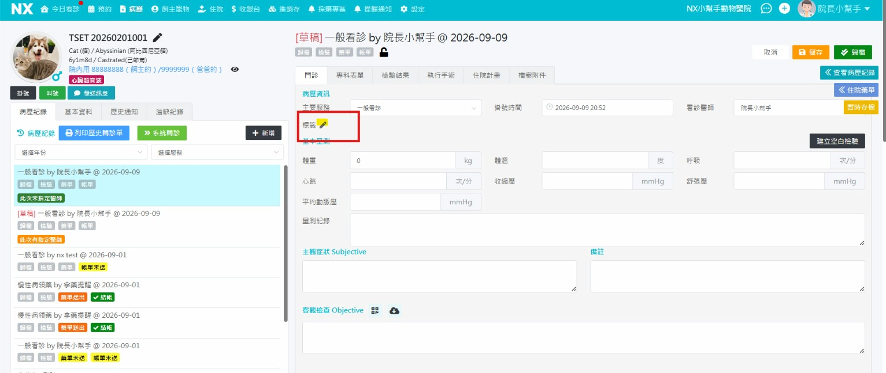
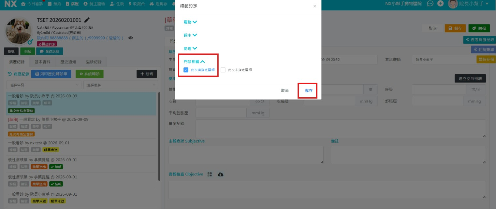

一為什麼要做
飼主願意指名某位獸醫師，代表信任他的專業與服務。指定率是對獸醫師肯定的重要指標，但以前沒有紀錄，不知道每位獸醫師被指定的情況。
11/1 起，每一筆病歷都要標註「有沒有指定獸醫師」
二什麼算指定
只看一件事：飼主有沒有主動說出要哪一位獸醫師
✓ 算指定此次有指定醫師
- 預約時（電話、LINE、線上）說要掛某位獸醫師
- 到櫃台主動說「我要給 ○ 醫師看」
- 主動問上次那位獸醫師在不在，並要給他看
- 朋友介紹、看網路評價，來指名某位獸醫師
- 回診時，飼主要求同一位獸醫師
- 手術、檢驗、取藥時，飼主指定由某位獸醫師處理
✕ 不算指定此次未指定醫師
- 飼主說「都可以」「哪位有空就哪位」
- 現場候診，由院內安排獸醫師
- 獸醫助理先提名字（例如「給王醫師看好嗎？」），飼主才說好
- 獸醫師上次交代回診，院內直接排同一位，飼主沒有特別要求
- 原本指定 A 獸醫師，最後由 B 獸醫師完成
例：A 當天不在、等候太久飼主改看別位、A 臨時有事改由別位執刀 - 急診，飼主來不及選獸醫師
不確定時，請當場問飼主：「請問今天有想指定哪一位醫師嗎？」
請照這句話問，不要先說名字；飼主說出名字才算指定。
請照這句話問，不要先說名字；飼主說出名字才算指定。
三怎麼標
開啟病歷
編輯畫面
→
編輯畫面
確認主要服務
看診醫師
→
看診醫師
點標籤
鉛筆 ✎
→
鉛筆 ✎
門診相關
勾選一個
→
勾選一個
按
儲存
→
儲存
確認
標籤出現
標籤出現
- 在病歷編輯畫面「門診」分頁的病歷資訊，先確認主要服務（看診／手術／檢驗／取藥）和看診醫師正確
- 點「標籤」旁的鉛筆 ✎，在「標籤設定」展開門診相關
- 勾此次有指定醫師或此次未指定醫師，只能勾一個，再按右下角「儲存」
- 回到病歷照平常儲存或歸檔；左邊病歷紀錄出現橘色或綠色標籤才算完成

① 病歷資訊 →「標籤」旁的鉛筆 ✎

② 標籤設定 → 門診相關 → 勾選 → 儲存
四注意事項
每一筆病歷都要標，看診、手術、檢驗、取藥都一樣必標
兩個標籤只能勾一個，不要都勾、也不要都不勾二選一
看診醫師填實際完成的獸醫師；
中途換獸醫師，標籤也要改成未指定要照實
中途換獸醫師，標籤也要改成未指定要照實
同一位飼主帶多隻寵物，每一隻的病歷分別標分別標
標錯了：點 ✎ 重新勾選，再按儲存可修改
每天下班前，櫃台檢查當日病歷是否都有標籤每日
指定率＝該獸醫師「有指定」病歷數 ÷ 該獸醫師全部病歷數，依主要服務分別統計。
如有任何問題，請隨時與我聯繫。
如有任何問題，請隨時與我聯繫。